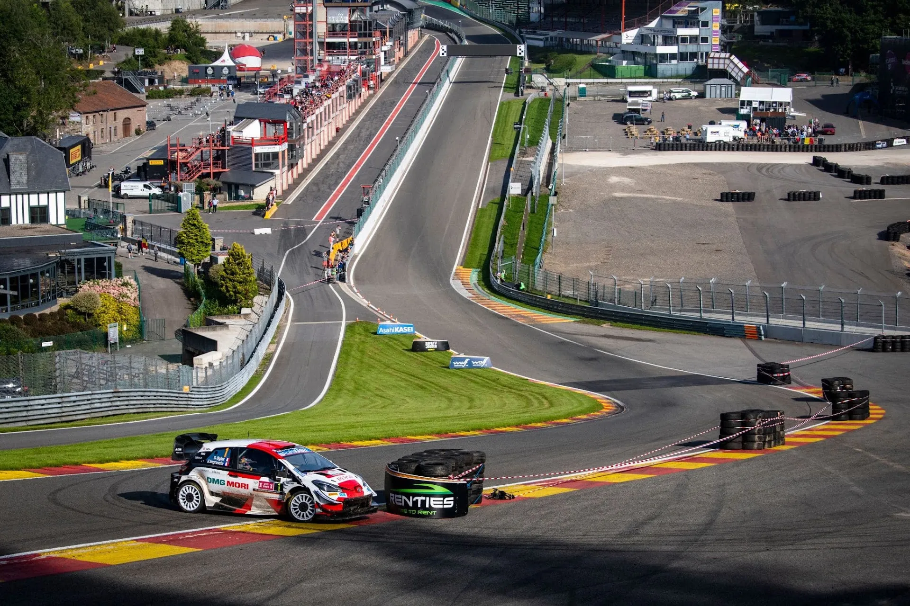
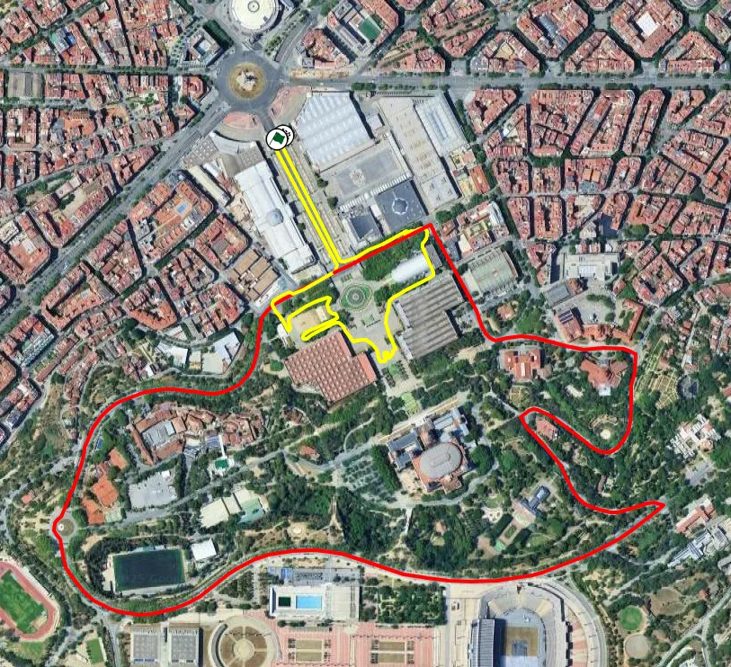
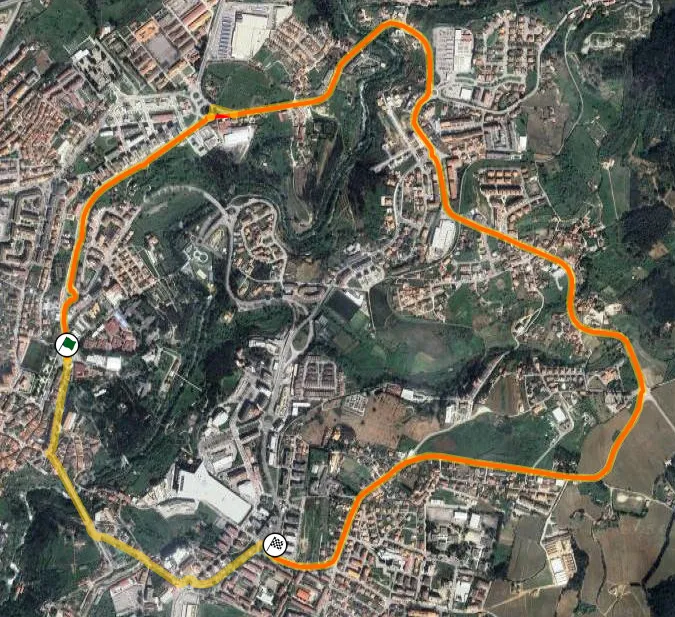
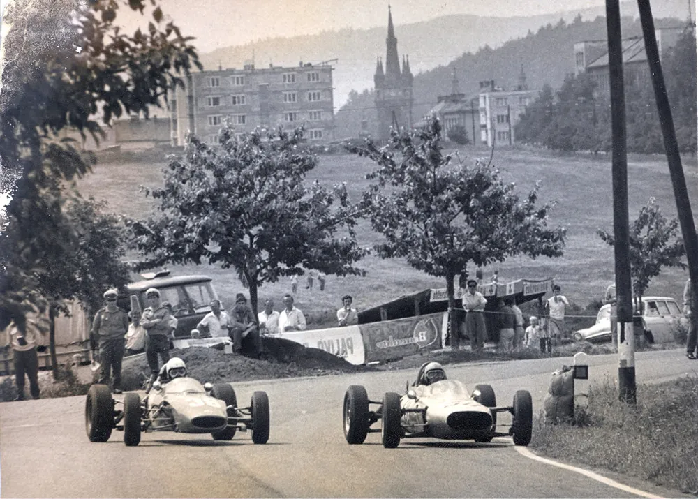

When the WRC visited Circuits
For the first time since 2008, the World Rally Championship will race in parts of the prestigious Monaco Grand Prix Circuit as part of an SSS on Saturday evening in January's Rally Monte-Carlo. The Monaco Circuit has been used thrice before in the WRC, namely in 1997, 2007 and 2008, and it's a fan favourite. However, this is not the only time the World Rally Championship used parts of a circuit for a stage. In fact, many motorsport venues have been repurposed for rallying, either as an SSS, or as Park Ferme/Regroups/Service Park for the event. So here are some instances of the WRC visiting some well known motorsport venues!
No Rallycross venues on this one, those will have to wait for another time!
The United Kingdom is likely the nation that uses its many permanent racing circuits the most for rallying. To this day, there are a lot of local events that use stages comprised of circuits and their access roads. The RAC Rally also made good use of the nations permanent racing venues. As early as 1974, the Rally GB had a stage in Croft, using parts of the old airfield as well as the circuit proper. Croft was not the only circuit used in the RAC Rally though, as in the 80s many more would find their place in the rally's itinerary. Donington Park and Oulton Park saw cars use most of their track as stages, with Castle Comb also being used in 1983. Later, in the 90s, when the first day of action was in Super Specials and Park stages, more circuits found themselves in the RAC Rally's itinerary. One of these was the MIRA Test Track, which was used just once in 1993.
In 1997, the RAC visited Britain's most famous circuit; Silverstone. The Northamptonshire circuit had two different stages in its grounds, one using parts of the circuit and its access roads, as well as a twin-car SSS. Silverstone would be used from 1997 to 1999. For the 2000s and most of the 2010s, this type of stage would be absent from the event's itinerary, with only Oulton Park hosting the rally's opening stage in 2019.
Britain isn't the only country to host a WRC stage on a circuit though. In the 90s, Rally Catalunya used the Circuit de Barcelona-Catalunya! The circuit was used on two occasions, in 1993 and 1994, each time with a different configuration.
Footage of the 1993 SSS in Circuit de Barcelona from 9:40 onwards
Something interesting about Rally Catalunya is that they also ran the Barcelona SSS (2014-2018) in Montjuïc, in very close proximity to the old Montjuïc circuit used in Formula 1 from 1969 to 1975.
In Portugal, the Vila Real street circuit was used partially in the 1980 edition of the event.

The Barcelona SSS (yellow) and the old Montjuïc Circuit (red)

The Vila Real stage (red) and the old circuit (yellow)
Rally New Zealand also used some racing circuits. In 1985, the rally used the very well known Pukekohe Circuit as SSS46, which included all of the circuit, only in reverse. More recently, in 2010, the rally made use of the Hampton Downs track. There was an SSS at the circuit's grounds, as well as a remote service.
Rally Mexico also made use of a permanent circuit in almost all of the years it was present in the World Rally Championship Calendar. The Autódromo de León circuit was used under multiple different configurations from 2006 to 2020, more commonly as a twin-car Super Special.
Rally Monza was a round of the World Rally Championship in 2020 and 2021, subbing in as a wildcard due to the COVID-19 pandemic. The rally had numerous stages inside the Autodromo Nazionale Monza circuit, using the circuit proper, as well as access roads, and also parts of the old banking! The 2020 edition was quite the rally, as extreme weather conditions made the stages a mudfest.
The Ypres Rally in 2020 was supposed to run some stages in Spa, and also the Spa-Francorchamps circuit. Unfortunately, the rally was cancelled due to the COVID-19 pandemic. The rally would be included on the calendar the following year, and would continue on the 2020 plan. However, the stages inside the Spa circuit were met with negative comments from fans, and were promptly dropped for 2022. The crews also had to cover a sizeable liasion just to get to the circuit from the rally's HQ.
In more recent years, the Klatovy Circuit used in the Central European Rally in 2023 used to serve as a track back in the 70s, holding Formula 3 and motorcycle races. The Biķernieki circuit was used as the opening stage of Rally Latvia in 2024, using parts of the permanent race course as well as the rallycross circuit.

There are more circuits that have been used by rally organisers. Estoril was used as a service point for Rally Portugal, and the Saudi Arabia service park was near the Jeddah Corniche Circuit, just to name a few.
Edit #1: Added Vila Real and Bikernieki circuits (thanks Propanator and BotaCalor!)
Edit #2: Added the New Zealand Circuits (thanks Onzah!)


Comments